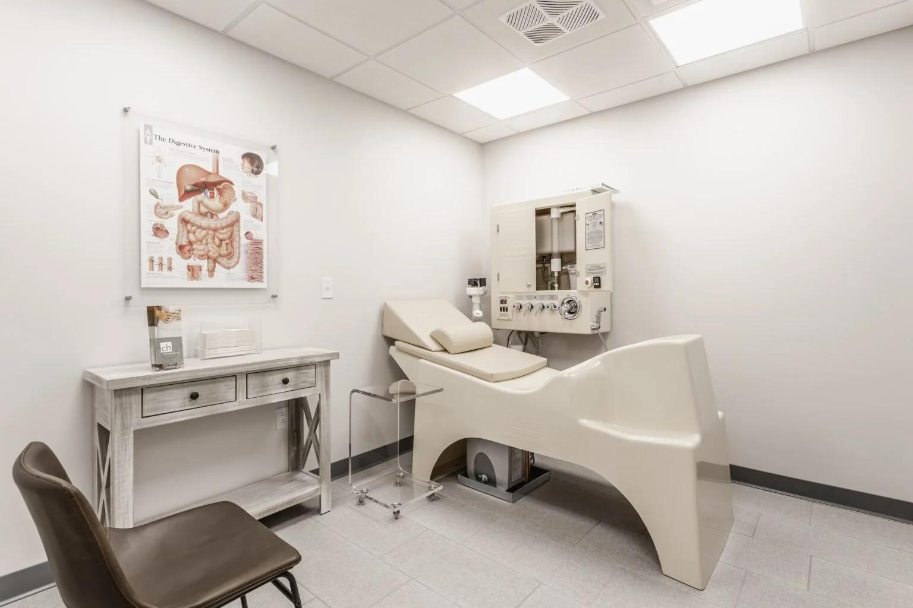
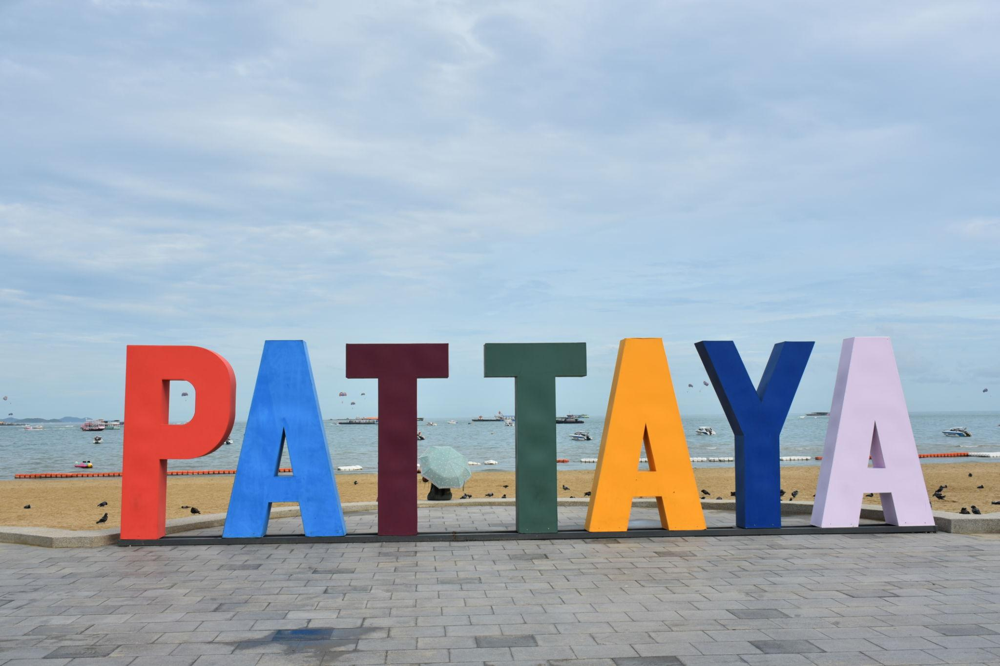

Already in Thailand?
You came for the holiday. Give five days to your health, too.
A private, doctor-supervised preventive health and recovery programme in Bangkok — designed for women in their 50s and 60s who want more than another week by the pool.
Get the programme & check availability →
For you — or both of you
At 58, prevention becomes more valuable than waiting for a problem.
You may feel perfectly well. That is exactly when a good health assessment can be useful: understand where you are now, identify what deserves attention, and leave Thailand with a clearer picture — not another supplement subscription.
“I feel fine — but I want to know.”
Start with a doctor consultation, physical check-up and baseline laboratory work before the programme continues.
“I don't want a hospital ordeal.”
The five-day programme combines medical assessment and supervised therapies with time for recovery, food and Thailand.
“My partner should enjoy it too.”
Your spouse can join the travel and sightseeing days. Tell us if you are considering the programme for two.
What you are actually getting
Not a spa package. Not a rushed health screen.
The existing KIN programme is built around a medical intake and a concentrated five-day schedule.
- Doctor consultation
- Physical check-up
- Baseline laboratory work
- Doctor feedback / review where scheduled
- Hyperbaric oxygen therapy (HBOT)
- Red light therapy ×2
- Colon hydrotherapy
- PMST or IV vitamin drip
- Traditional massage
- Private airport transfer
- Bangkok → Pattaya transfer
- Coastal / cultural sightseeing
- Beachside relaxation
- Airport transfer
Important: Additional diagnostic services such as MRI, DEXA or gastrointestinal investigations should only be added where clinically indicated and after KIN confirms the exact pathway. They are not presented here as automatic inclusions.
Five days
A simple journey from assessment to recovery.
Day 1 — Assessment & baseline
Airport pick-up · doctor consultation · check-up · baseline lab work · first red light session · traditional massage.

Day 2 — Cellular Reset
Colon hydrotherapy · HBOT · second red light session · anti-inflammatory lunch · PMST or IV vitamin drip.

Day 3 — Pattaya
Optional doctor feedback · transfer to Pattaya · coastal and cultural sightseeing.
Day 4 — Thailand experience
Guided sightseeing · free exploration · optional aesthetic-centre visit · beachside relaxation · return to Bangkok.
Day 5 — Departure
Optional final check-up · shopping at Siam Premium Outlet · transfer to the airport.
Why speak to us first?
You don't have to decide today.
Tell us about yourself
Name, phone and a few details about what you want from the programme.
Choose a video call
Immediately after sending your enquiry, you can choose a convenient time for a free video consultation.
Get a clear plan
We discuss your goals, dates, suitability and what should be confirmed with KIN before you book.
Your next step
Leave your number first. Then choose your call.
The first step takes about one minute. Once your enquiry is sent, you'll be taken to a private booking page where you can choose a free video consultation.
If you do not book a time, we still have your enquiry and can contact you to understand what you need.
Before you enquire
A few sensible questions.
Is this treatment for a diagnosed medical condition?
No. It is a preventative and restorative programme under medical supervision. It does not replace your GP or consultant. KIN reviews suitability before a booking is confirmed.
Can my husband or wife come?
Yes. Partners can join the transfers and sightseeing days. If both people want the clinical programme, it is booked per person.
Is accommodation included?
No. The current programme price is for the listed programme components and transfers. Hotel and international flights are separate.
What happens after I send my details?
You go straight to a page where you can choose a free video consultation time. If you do not choose a time, we can still contact you using the number you provided.